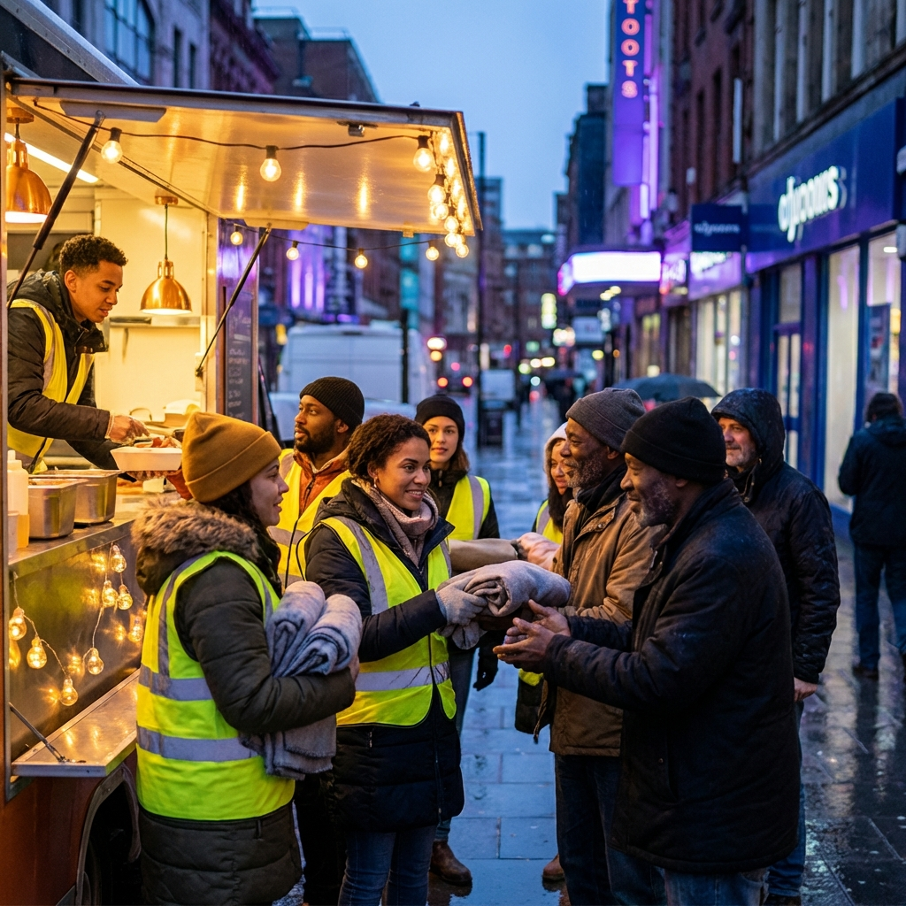
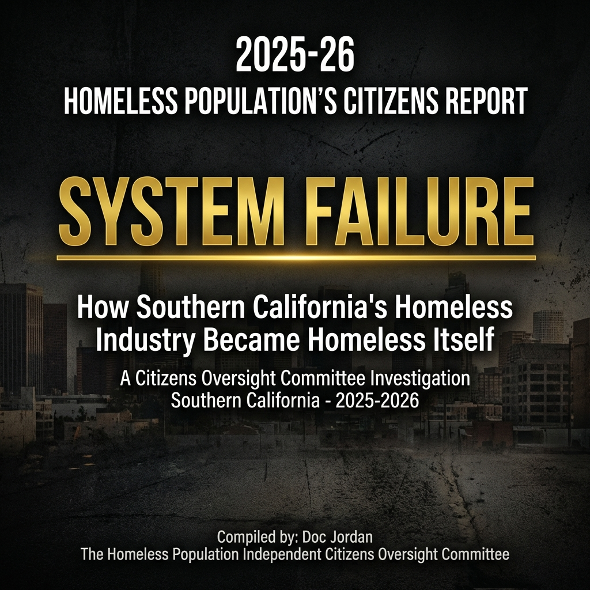

Empowering Lives, Restoring Hope, Building Communities
Created by Concerned Americans for Concerned Americans
Comprehensive support for addiction, homelessness, mental health, and Inmate Resource Guides.

Read the definitive 2025 report exposing the failures in the current housing and social services systems. This comprehensive review highlights critical areas for systemic change, transparency, and action.

Skid Row Joe's Hope Hub is dedicated to providing comprehensive, compassionate support to individuals facing addiction, homelessness, mental health challenges, and reintegration issues. We believe in empowering individuals through accessible resources, community support, and holistic care.
Learn More About UsJoin our community and make a difference in someone's life.
Find local opportunities to contribute your skills and time.
We believe in the power of community and compassion. By volunteering, you can make a real difference in your local area. Whether you have an hour to spare or want to commit to a long-term project, there's an opportunity for you. Choose based on your availability, special skills, or even contribute through financial or material donations. Every act of kindness, no matter how small, can change someone's world. Join us in building a stronger, more supportive community – right where you live.
We value your input. Share suggestions, ideas, alerts, or testimonies to help us improve and grow.